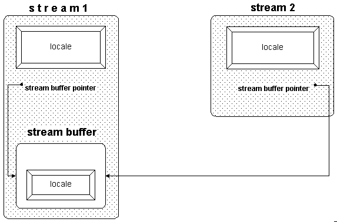
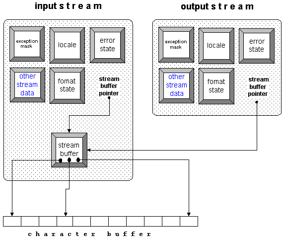

Despite the previous caveats, there are situations where sharing a stream buffer among streams is useful and intended. Let us focus on these in this section.
Imagine you need different formatting for different kinds of output to the same stream. Instead of switching the format settings between the different kinds of output, you can arrange for two separate streams to share a stream buffer. The streams would have different format settings, but write output to the same stream buffer. Here is an example:
std::ofstream file1("/tmp/x");
std::ostream file2(file1.rdbuf()); //1
file1.setf(std::ios_base::fixed, std::ios_base::floatfield); //2
file1.precision(5);
file2.setf(std::ios_base::scientific, std::ios_base::floatfield);
file2.precision(3);
file1 << std::setw(10) << 47.11 << '\n'; //3
file2 << std::setw(10) << 47.11 << '\n'; //4
| //1 | The stream buffer of file1 is replaced by the stream buffer of file2. Afterwards, both streams share the buffer. |
| //2 | Create different format settings for both files. |
| //3 | The output here is: 47.11000 |
| //4 | The output here is: 4.711e+01 |
Note that file2 in the example above has to be an output stream rather than an output file stream. This is because file streams do not allow you to switch the file stream buffer.
Similarly, you can use separate streams that share a stream buffer in order to avoid locale switches. This is useful when you must insert multilingual text into the same stream. Here is an example:
std::ostringstream file1;
std::ostream file2(file1.rdbuf());
file1.imbue(std::locale("De_DE")); // actual locale names depend
file2.imbue(std::locale("En_US")); // on the platform
file1 << 47.11 << '\t';
file2 << 47.11 << '\n';
std::cout << file1.str() << std::endl; //1
| //1 | The output is: 47,11 47.11 |
Again, there is a little snag. In Figure 31, note that a stream buffer has a locale object of its own, in addition to the stream's locale object.

Section 27.4.4 explained the role of those two locale objects. To recap, the stream delegates the handling of numeric entities to its locale's numeric facets. The stream buffer uses its locale's code conversion facet for character-wise transformation between the buffer content and characters transported to and from the external device.
Usually the stream's locale and the stream buffer's locale are identical. However, when you share a stream buffer between two streams with different locales, you must decide which locale the stream buffer will use.
You can set the stream buffer's locale by calling the std::streambuf::pubimbue() member function as follows:
file1.imbue(std::locale("De_DE"));
file2.imbue(std::locale("En_US"));
file1.rdbuf()->pubimbue(std::locale("De_DE"));
You can also use a shared stream buffer in order to have read and write access to a stream:
filebuf fbuf; //1
fbuf.open("/tmp/inout",std::ios_base::in |
std::ios_base::out); //2
std::istream in(&fbuf); //3
std::ostream out(&fbuf); //4
std::cout << in.rdbuf(); //5
out << "..." << '\n' ; //6
Naturally, it is easier and less error-prone to use bidirectional streams when you must read and write to a file. The bidirectional equivalent to the example above would be:
std::fstream of("/tmp/inout");
std::cout << of.rdbuf();
of << "..." << '\n' ;
Notice that there is a difference between the solutions that you can see by comparing Figure 32 and Figure 33. An input and an output stream that share a stream buffer, as shown in Figure 32, can still have separate format settings, different locales, different exception masks, and so on.

In contrast, the bidirectional stream shown in Figure 33 can have only one format setting, one locale, and so on:

It seems clear that you cannot have different settings for input and output operations when you use a bidirectional stream. Still, it is advisable to use bidirectional file or string streams if you need to read and write to a file or string, instead of creating an input and an output stream that share a stream buffer. The bidirectional stream is easier to declare, and you need not worry about the stream buffer object's lifetime.
NOTE -- It's better to use one bidirectional file or string stream for reading and writing to a file or string, rather than two streams that share a stream buffer.